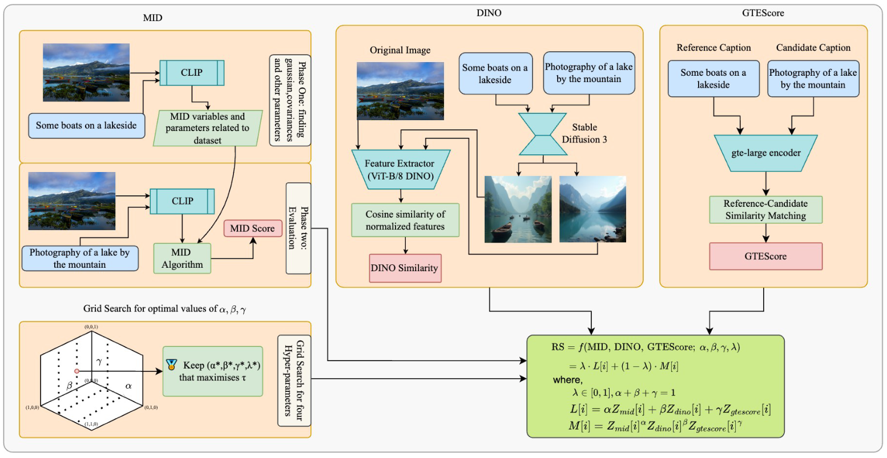
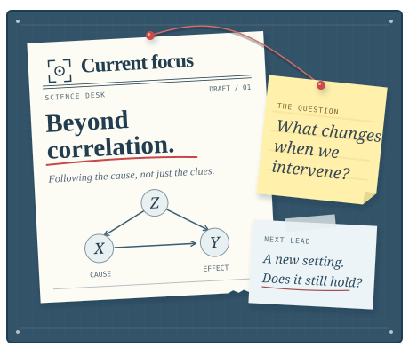
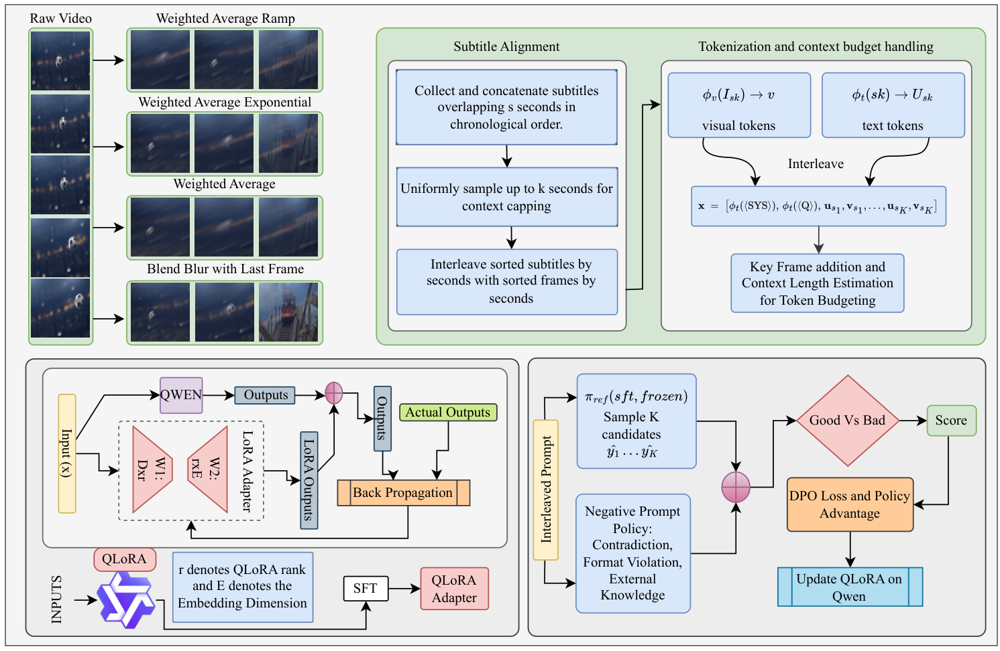
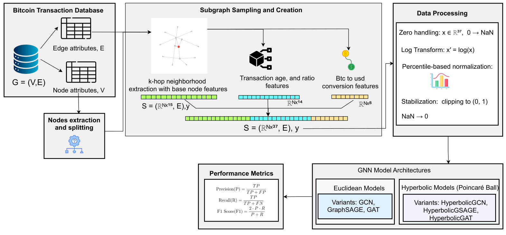

COMPUTER SCIENCE / SOUTHERN MISS
AnkitGhimire
Studying causality
Cyber Innovation Lab
University of Southern Mississippi

The paper trail
SELECTED PUBLICATIONSPublished papers

POVQA: Preference-Optimized Video Question Answering with Rationales for Data Efficiency
IEEE/CVF CVPR Workshops (CVPRW), 2026
Under revision

UNDER REVISION
A Depth-Aware Comparative Study of Euclidean and Hyperbolic Graph Neural Networks on Bitcoin Transaction Systems
IEEE Transactions on Computational Social Systems
The identity
Hi, my name is Ankit Ghimire. I am a senior at the University of Southern Mississippi majoring in Computer Science with a minor in Mathematics. I am an undergraduate student researcher at the Cyber Innovation Lab, advised by Prof. Nick Rahimi. I am broadly interested in multimodal systems, out-of-distribution (OOD) generalization, and causal learning.
Research radar
Experience
Jan 2025 – Present
Undergraduate Researcher
Cyber Innovation Lab
University of Southern Mississippi
- Multimodal evaluation frameworks for image captioning using distributional, perceptual, and linguistic signals.
- Long-context multimodal video QA with rationale supervision and preference optimization.
- Graph out-of-distribution generalization and robustness in GNNs.
- Euclidean and hyperbolic GNNs for fraud detection in large-scale Bitcoin transaction graphs.
Honors & awards
2026
Second Place — Best Presentation on Computational Approaches
Undergraduate Symposium for Research and Creative Activity, Drapeau Center
Research presentation award · $300
2025 – 2027
Keystone Honors Scholar & Merit-Based Full-Tuition Scholarship
University of Southern Mississippi